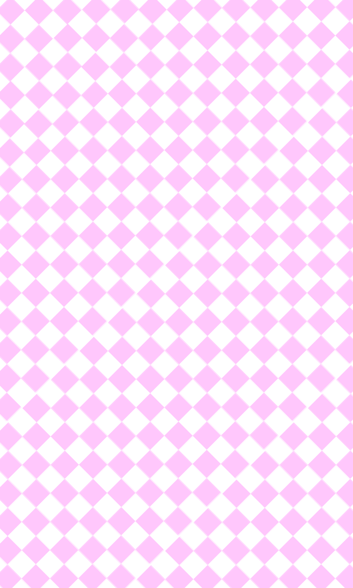
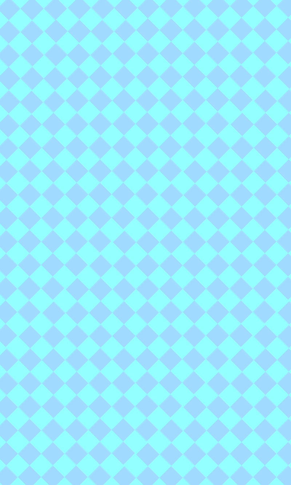
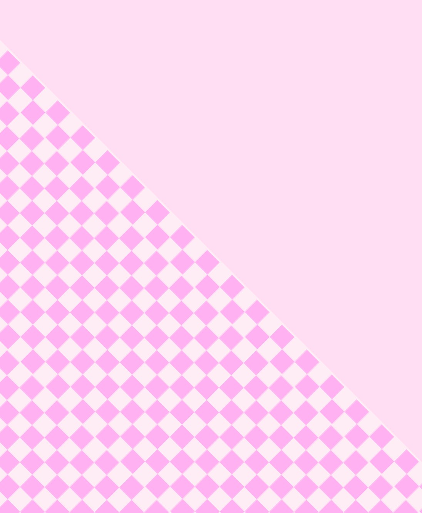
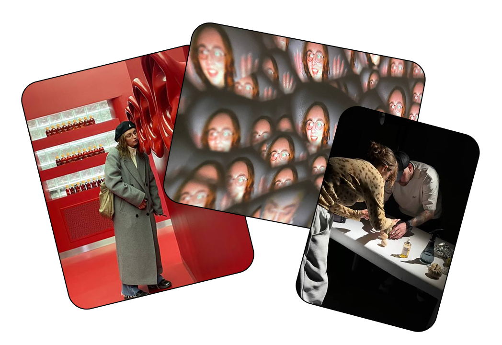
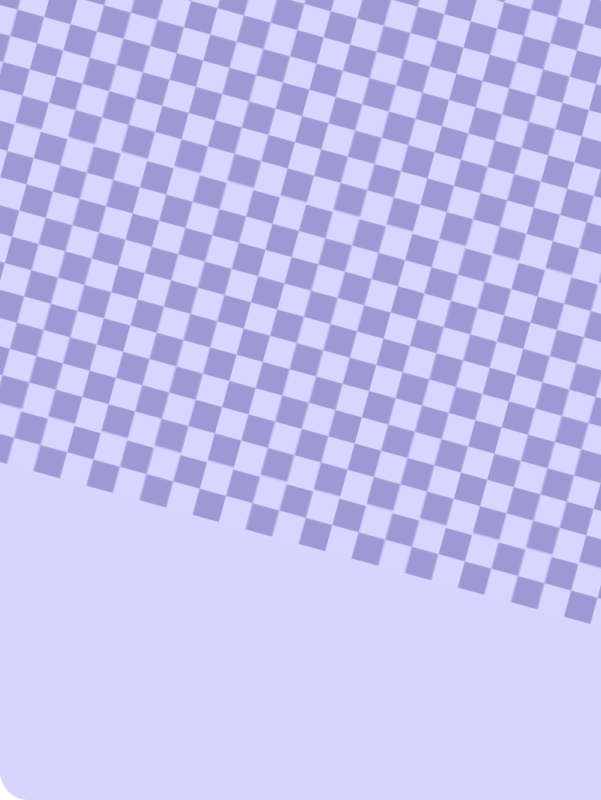

Цветное vs. Чёрно-белое
Брендинг для конкурса
с 28 млн медийным охватом
Брендинг
Веб-дизайн
Ивент

Брендинг для конкурса
с 28 млн медийным охватом
 х
х

Создание леттеринга и motion-коммуникаций

Редизайн проекта цифрового искусства, увеличивший прирост аудитории на 30%

Разработка визуальной стратегии и дизайна носителей


Переношу этот опыт в дизайн, соединяя визуальную культуру с бизнес-задачами

Главный источник вдохновения вне дизайна — мой талисман и верный спутник, французский бульдог Медор
Подборка моих свободных экспериментов с формой, образом и идеей